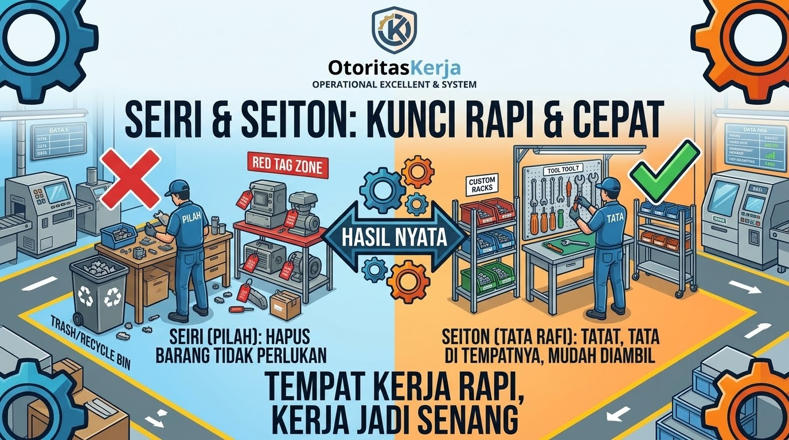
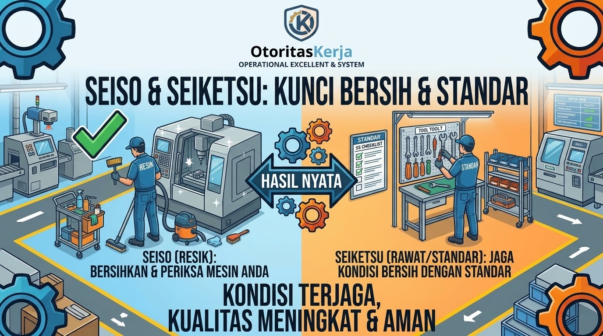
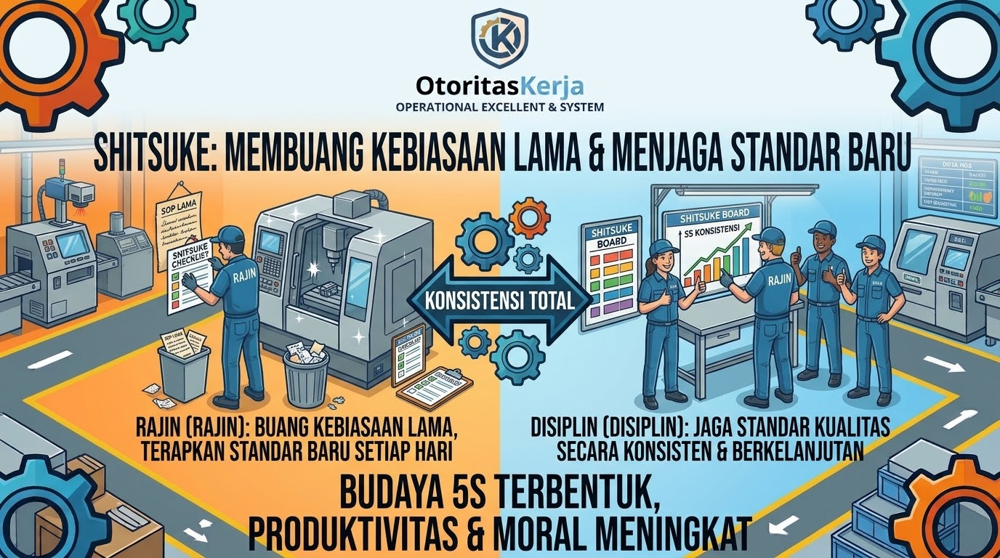

Sejarah Singkat Lahirnya Konsep 5S
Banyak orang mengira 5S adalah metode manajemen modern yang baru lahir beberapa dekade lalu. Padahal, akar sejarah 5S bermula di Jepang pasca Perang Dunia II. Saat itu, industri manufaktur Jepang berjuang untuk bangkit dari kehancuran ekonomi dan mengejar ketertinggalan kualitas dari pabrik-pabrik di barat.
Para pakar manajemen industri di Jepang mengamati bahwa pabrik-pabrik yang efisien dan memiliki tingkat kecelakaan kerja rendah selalu dimulai dari kedisiplinan dasar dalam merawat kebersihan dan keteraturan area kerja. Dari sinilah cikal bakal sistem 5S dirumuskan, yang kemudian dipopulerkan secara global bersamaan dengan kesuksesan sistem produksi Toyota (Toyota Production System).
Apa Sebenarnya Arti dari 5S?
5S adalah singkatan dari lima kata berbahasa Jepang yang berfokus pada penataan lingkungan kerja. Di Indonesia, prinsip ini sering diterjemahkan menjadi 5R (Ringkas, Rapi, Resik, Rawat, Rajin). Berikut adalah rincian maknanya di lantai produksi:
Menilai dan memisahkan antara barang yang benar-benar dibutuhkan di area kerja dengan barang yang sudah tidak terpakai, lalu menyingkirkannya dari lantai produksi.
Menata barang yang diperlukan pada tempatnya masing-masing dengan penandaan atau label yang jelas, agar mudah diambil dan dikembalikan dalam waktu singkat tanpa mencari-cari.
Membersihkan mesin dan area kerja secara total dari debu, kotoran, dan sisa bahan, sekaligus menjadikannya sarana inspeksi dini terhadap potensi kerusakan mesin.
Memelihara dan menjaga standar ketiga langkah sebelumnya secara konsisten melalui manajemen visual, aturan kebersihan, dan jadwal piket yang terstruktur.
Membangun kedisiplinan mental dan kesadaran diri pada setiap individu di pabrik untuk menjalankan prosedur 5S sebagai kebiasaan sehari-hari tanpa perlu diawasi.
Studi Kasus Nyata: Transformasi Lini Perakitan Mesin
Untuk memahami bagaimana kelima pilar 5S diterapkan secara utuh tanpa ada informasi yang terlewat, mari kita bedah studi kasus nyata di area kerja perakitan mesin. Sebelumnya, area ini mengalami masalah inefisiensi parah karena waktu operator terbuang sia-sia untuk mencari perkakas dan menghadapi seringnya kerusakan mesin mendadak akibat kotoran yang menumpuk.

Ilustrasi 1: Penerapan Seiri (pemilahan barang tak terpakai) dan Seiton (penataan tata letak visual).
Tahapan Eksekusi Seiri & Seiton:
Tim produksi melakukan penyortiran total di meja kerja operator. Barang-barang yang tidak diperlukan seperti tumpukan kardus bekas, komponen usang yang sudah tidak dipakai selama 6 bulan, dan alat ukur yang rusak disingkirkan dari area produksi ke area karantina.
Barang dan perkakas yang tersisa ditata berdasarkan tingkat frekuensi penggunaannya. Dibuatlah papan bayangan (shadow board) di dinding tempat kerja, di mana setiap kunci pas, obeng, dan tang diberi garis luar (siluet) beserta label nama yang jelas agar mudah diambil dan dikembalikan pada tempatnya dalam waktu kurang dari 10 detik.

Ilustrasi 2: Penerapan Seiso (pembersihan sebagai inspeksi) dan Seiketsu (standarisasi visual).
Tahapan Eksekusi Seiso & Seiketsu:
Operator membersihkan mesin dan lantai kerja secara menyeluruh dari sisa-sisa serpihan material dan debu oli. Pembersihan ini tidak sekadar membuat area tampak bersih, melainkan dijadikan sarana inspeksi dini (misalnya: operator langsung mendeteksi adanya kebocoran oli kecil pada selang mesin sebelum berubah menjadi kerusakan besar).
Standar kebersihan dan kerapian yang telah terbentuk dilembagakan melalui manajemen visual, pemberian label zona warna lantai (floor marking), serta pembuatan jadwal piket pembersihan harian yang ditempel di papan informasi area kerja.

Ilustrasi 3: Penerapan Shitsuke (pembentukan kedisiplinan dan kebiasaan mandiri).
Tahapan Eksekusi Shitsuke:
Manajemen membangun kedisiplinan jangka panjang melalui audit 5S mingguan, briefing singkat sebelum shift dimulai, serta pembentukan kesadaran mental pada setiap pekerja agar mematuhi aturan standar kerja secara mandiri tanpa perlu diawasi terus-menerus.
Kesimpulan Praktisi
5S bukanlah program pembersihan seremonial yang hanya dilakukan saat ada kunjungan auditor atau manajemen puncak. 5S adalah fondasi teknis dan budaya kerja paling dasar. Tanpa lingkungan kerja yang rapi dan terstandarisasi, mustahil sebuah pabrik bisa menerapkan sistem otomasi atau peningkatan mutu tingkat lanjut.
Catatan Praktisi:
"Pabrik yang hebat tidak diukur dari seberapa canggih mesinnya, melainkan dari seberapa disiplin para pekerjanya merawat kebersihan dan keteraturan di area kerja mereka."